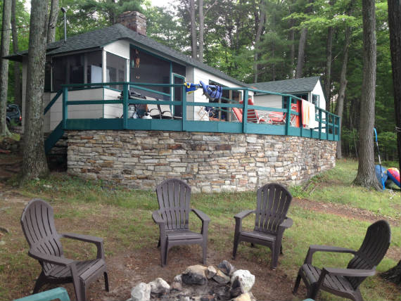

...nestled on a lake in the Adirondacks. The Anchorage provides a quality of life not found easily in today's busy world.
With it's rustic, old world charm, and it's unmatched lake access, the Anchorage offers guests the opportunity to step out of everyday life and back to a simpler time.
Harlow Nichols and his business partner Burt Mace purchased property on the West shore of Lake Auger in the 1920's. The built small camps for themselves, and later build several more "modern" camps to rent as vacation rentals to folks driving up from Albany and New York.
Over the years, the camps were sold to individuals who had rented them. Some have been rebuild or winterized. The Anchorage is still much the same as it was when it was built in the mid-thirties.
A large comfy couch, an extra long, family style, table, and modern internet and television await visitors to lake the Anchorage.
A good book and a cozy fire are never far away. With fire wood onsite, and the Keeseville free Library not far away, guests can stay comfortable and content.
Two bedrooms, one with a king size bed and a lake view, and another with two twin built-ins provide a restful night's sleep.